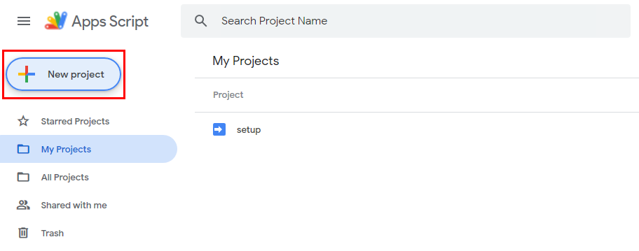
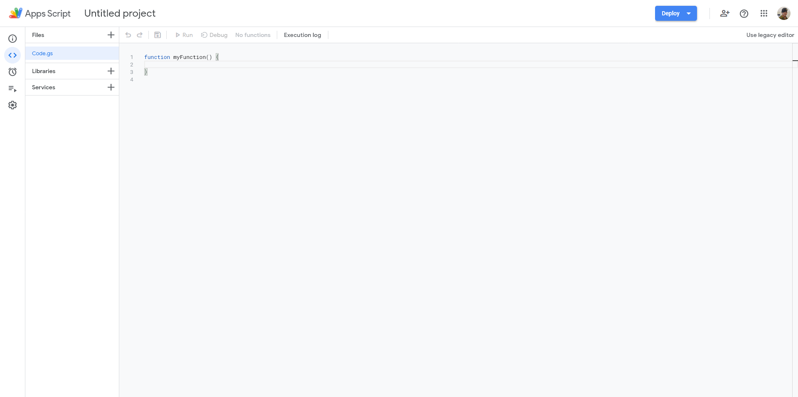
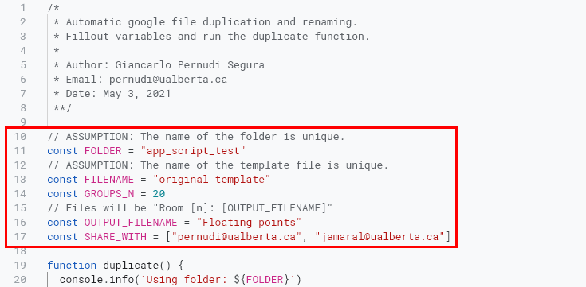
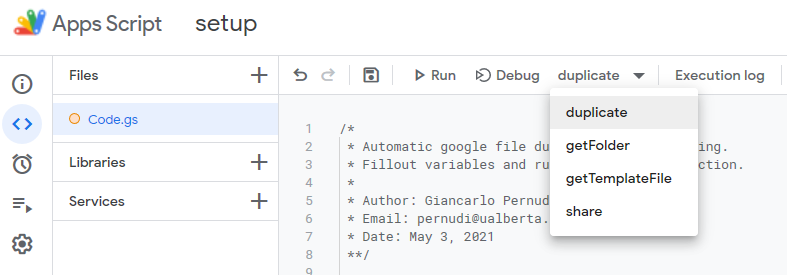
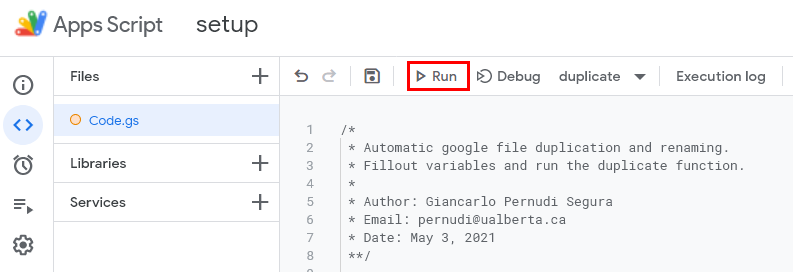

Participation Document Duplication
Note: You'll be using using your UAlberta GSuite account for these instructions.
Setup
You can skip this part if you already have a folder and file you want to duplicate.
-
Go to Google Drive.
-
Create a new folder and give it a unique name not used elsewhere.
-
In that folder you've created, create a new document of any type and give it a unique name.
-
Now you can edit that file you've created and populate it with content.
Run
Assumption: You have a folder with a template document created. If not, go to the previous section.
- Parameters
Go to https://script.google.com/home and create a new project.

-
You'll notice you get a code editor with some code on it. You can delete this code since we'll be replacing it.

function myFunction() {
}
-
Open
this document.
-
Copy everything from the file you just opened in step 3 and paste it into the code editor on Google App Script.
-
Fill out the parameters at the top with the values you want. Reference the parameters table

-
Once you've filled out the parameters, save your project by clicking on the floppy disk icon. Then, select duplicate from the dropdown menu at the top.

-
Now click run. If you're running this script for the first time. Google will open a pop-up asking for permission to your google drive and asking if you trust this script. Accept it.

-
A log at the bottom will open up with progress. If any errors occur, it will notify you via the logs.
-
Once it says Execution completed, you can look at your folder with all the new files it has created.
Parameters
| PARAMETER NAME |
DESCRIPTION |
TYPE |
EXAMPLE |
| FOLDER |
The name of the folder you want to use. Must contain the template file you wish to duplicate. |
String |
"test folder" |
| FILENAME |
The name of the template file you wish to duplicate. |
String |
"template file" |
| GROUPS_N |
The number of duplications you want to create. |
Number |
15 |
| OUTPUT_FILENAME |
The output name of the duplicated folder. Ouptut will be of format: Room {x}:
{OUTPUT_FILENAME}. |
String |
"Jan 2 Exercise" |
| SHARE_WITH |
A list of emails you wish to share the folder with. Users will be given Editor
access. |
[String] |
["pernudi@ualberta.ca", "jamaral@ualberta.ca"] or [] (if don't want to
share) |